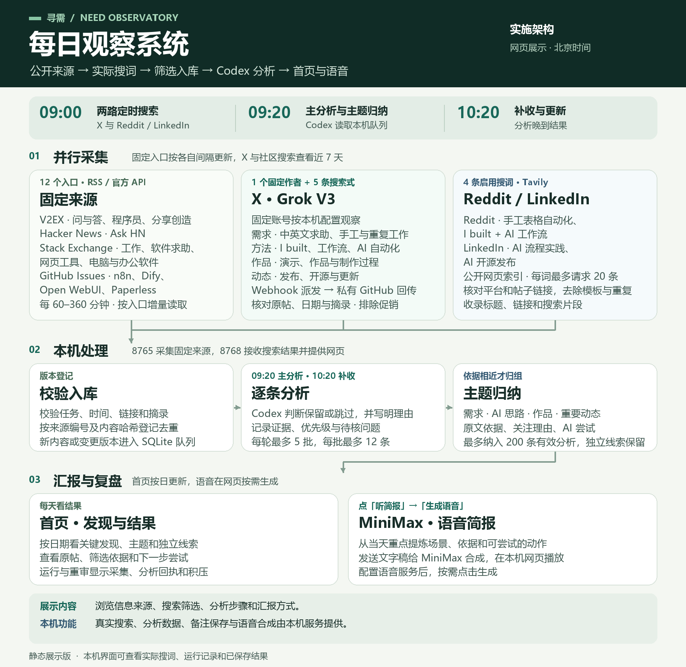

需求
具体工作、现有办法和遇到的困难。
具体工作、现有办法和遇到的困难。
已经采用的做法、可复用步骤和限制。
实际展示的成品和制作过程。
可核对的发布、开源和功能变化。
01 并行采集
按入口间隔增量读取 V2EX、Ask HN、Stack Exchange，以及 n8n、Dify、Open WebUI、Paperless 的公开 Issue。
本机用 webhook 下发固定账号与搜词。Grok 按需求、做法、作品和动态筛选，附原帖和摘录，经 GitHub 私有 Release 回传。
用表格自动化、AI 工作流和开源发布等搜词找候选。核对帖子链接、去除模板片段和重复项，再收录。
02 本机处理
核对来源、任务编号、时间窗和原帖。新内容或变更版本进入本机 SQLite 队列。
分批阅读材料，给出判断、理由、证据摘录和待核问题，再提出可验证的尝试。
按具体问题或做法归组。原文依据可展开，尚未归组的线索单独展示。
03 汇报与复盘
本机首页展示每日重点、主题、独立线索和下一步建议，也能查看实际搜词及运行回执。
本机从当天有效结论生成文字稿。在首页点「听简报」与「生成语音」，按需合成并播放。

.\Start-All-Observatory.ps1 -NoBrowser，再打开本机首页。